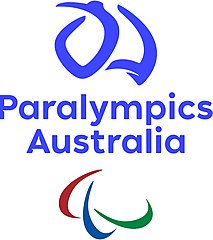

This overview is based on this XML output of the GLAMorous tool d.d. 14-03-2024.
It was generated using the GLAMorousToHTML code.
Also see the documentation of this tool.
This data is also available as an Excel file. More structured data formats (csv, json) will be added in the future.
Available languages
English (773)
Portuguese (297)
Egyptian Arabic (174)
Spanish (169)
Arabic (142)
Chinese (141)
German (106)
French (100)
Italian (75)
Persian (51)
Malayalam (41)
Russian (36)
Japanese (30)
Dutch (28)
Catalan (26)
Ukrainian (26)
Nynorsk (25)
Polish (22)
Hebrew (18)
Swedish (17)
Finnish (16)
Indonesian (15)
Galician (13)
Afrikaans (11)
Hindi (10)
Bangla (9)
Turkish (9)
Uzbek (9)
Vietnamese (9)
Greek (7)
Korean (7)
Thai (7)
Czech (6)
West Frisian (6)
Asturian (5)
Hausa (5)
Bulgarian (4)
Eastern Armenian (4)
Esperanto (4)
Ido (4)
Serbian (4)
Malay (3)
Romanian (3)
Slovak (3)
Sorani (3)
Standard Estonian (3)
Twi (3)
Basque (2)
Breton (2)
Cantonese (2)
Hungarian (2)
Irish (2)
Latin (2)
Latvian (2)
Lithuanian (2)
Malagasy (2)
Albanian (1)
Assamese (1)
Azerbaijani (1)
Bosnian (1)
Burmese (1)
Cebuano (1)
Classical Chinese (1)
Danish (1)
Interlingua (1)
Interlingue (1)
Kabiye (1)
Kannada (1)
Kinyarwanda (1)
Macedonian (1)
Nepali (1)
Old English (1)
Sanskrit (1)
Scots (1)
Sicilian (1)
Sinhala (1)
Slovene (1)
Swahili (1)
Tagalog (1)
Tamil (1)
Telugu (1)
Võro (1)
Welsh (1)
Western Armenian (1)
English (773)
1939_in_Australia |
1960_Summer_Paralympics |
1962_Commonwealth_Paraplegic_Games |
1964_Summer_Paralympics |
1980_Winter_Paralympics |
1988_Summer_Paralympics |
1996_Summer_Olympics |
1996_Summer_Paralympics |
2000_Summer_Paralympics |
2000_Summer_Paralympics_medal_table |
2008_Summer_Paralympics_opening_ceremony |
2011–12_Australia_women's_national_goalball_team |
2012_Summer_Paralympics_medal_table |
2018_in_Australia |
2019_in_Australia |
2022_Winter_Paralympics_opening_ceremony |
4-point_player |
4.5-point_player |
A8_(classification) |
ACT_Academy_of_Sport |
AJ_Jennings |
ARIA_Music_Awards_of_2012 |
Aaron_Chatman |
Aaron_Rhind |
Abebe_Fekadu |
Ableism |
Adam_Deans |
Adam_Hills |
Adam_Kellerman |
Adrian_Grogan |
Adrian_King_(basketball) |
Ahmed_Kelly |
Alastair_Smales |
Albert_Lee_(Paralympian) |
Alex_Harris_(swimmer) |
Alexandra_Lisney |
Alicia_Aberley |
Alison_Mosely |
Alison_Quinn |
Alissa_Jordaan |
Alpine_skiing_at_the_2022_Winter_Paralympics |
Amanda_Carter |
Amanda_Fraser |
Amanda_Reid |
Amber_Merritt |
Amelia_(birth_defect) |
Amelia_Hodgson |
Amy_Ridley |
Amy_Winters |
Andrea_McDonnell |
Andrew_Edmondson |
Andrew_Harrison_(wheelchair_rugby) |
Andrew_Newell_(athlete) |
Andrew_Pasterfield |
Andy_Bor |
Angie_Ballard |
Annabelle_Dennis |
Annabelle_Williams |
Anne_Brunell |
Anthony_Biddle_(Paralympian) |
Anthony_Clarke_(judoka) |
Anton_Flavel |
Anton_Zappelli |
Archery_at_the_2020_Summer_Paralympics |
Ari_Gesini |
Ashleigh_McConnell |
Ashley_Adams |
Athletics_at_the_1996_Summer_Olympics_–_Men's_marathon |
Athletics_at_the_1996_Summer_Paralympics |
Athletics_at_the_2000_Summer_Paralympics |
Atlanta–Fulton_County_Stadium |
Australia_at_the_1960_Summer_Paralympics |
Australia_at_the_1964_Summer_Paralympics |
Australia_at_the_1968_Summer_Paralympics |
Australia_at_the_1972_Summer_Paralympics |
Australia_at_the_1976_Summer_Paralympics |
Australia_at_the_1976_Winter_Paralympics |
Australia_at_the_1980_Summer_Paralympics |
Australia_at_the_1980_Winter_Paralympics |
Australia_at_the_1984_Winter_Paralympics |
Australia_at_the_1988_Summer_Paralympics |
Australia_at_the_1988_Winter_Paralympics |
Australia_at_the_1992_Paralympic_Games_for_Persons_with_Mental_Handicap |
Australia_at_the_1992_Summer_Paralympics |
Australia_at_the_1992_Winter_Paralympics |
Australia_at_the_1994_Winter_Paralympics |
Australia_at_the_1996_Summer_Paralympics |
Australia_at_the_1998_Winter_Paralympics |
Australia_at_the_2000_Summer_Paralympics |
Australia_at_the_2002_Winter_Paralympics |
Australia_at_the_2006_Winter_Paralympics |
Australia_at_the_2008_Summer_Paralympics |
Australia_at_the_2010_Winter_Paralympics |
Australia_at_the_2012_Summer_Paralympics |
Australia_at_the_2014_Winter_Paralympics |
Australia_at_the_2018_Winter_Paralympics |
Australia_at_the_2020_Summer_Paralympics |
Australia_at_the_2022_Winter_Paralympics |
Australia_at_the_Paralympics |
Australia_men's_national_wheelchair_basketball_team |
Australia_national_wheelchair_rugby_team |
Australia_women's_national_goalball_team |
Australia_women's_national_wheelchair_basketball_team |
Australia_women's_national_wheelchair_basketball_team_at_the_2012_Summer_Paralympics |
Australian_Paralympic_Athletics_Team |
Australian_Paralympic_Boccia_Team |
Australian_Paralympic_Cycling_Team |
Australian_Paralympic_Equestrian_Team |
Australian_Paralympic_Paracanoe_Team |
Australian_Paralympic_Powerlifting_Team |
Australian_Paralympic_Rowing_Team |
Australian_Paralympic_Swim_Team |
Australian_Paralympic_Table_Tennis_Team |
Australian_Paralympic_Taekwondo_Team |
Australian_Paralympic_wheelchair_tennis_team |
Australian_Tennis_Hall_of_Fame |
Australian_of_the_Year |
B1_(classification) |
B3_(classification) |
Barak_Mizrachi |
Barbara_Worley |
Bart_Bunting |
Ben_Austin |
Ben_Fawcett |
Ben_Newton_(wheelchair_rugby) |
Ben_Popham |
Ben_Tudhope |
Ben_Weekes |
Bill_Chaffey_(paratriathlete) |
Bill_Latham_(basketball) |
Bill_Mather-Brown |
Blagoy_Blagoev |
Blake_Cochrane |
Bob_McCullough_(sports_administrator) |
Bobbi_Kelly |
Bocce |
Boccia_at_the_1996_Summer_Paralympics |
Boccia_at_the_2020_Summer_Paralympics |
Boccia_classification |
Brad_Dubberley |
Brad_Ness |
Brad_Scott_(runner) |
Bradley_Mark |
Bradley_Thomas_(athlete) |
Braedan_Jason |
Branka_Pupovac |
Brant_Garvey |
Brayden_Davidson |
Brendan_Burkett |
Brendan_Keogh_(coach) |
Brenden_Hall |
Brett_Holcombe |
Brett_Reid |
Brett_Stibners |
Brian_Harvey_(athlete) |
Brian_McNicholl |
Brianna_Coop |
Bridie_Kean |
Britta_Siegers |
Brock_Ingram |
Brooke_Stockham |
Bruce_Wallrodt |
Bruno_Moretti_(Paralympian) |
Bryce_Alman |
Bryce_Lindores |
Brydee_Moore |
CP7_(classification) |
CP8_(classification) |
Caitlin_Dransfield |
Cameron_Carr_(wheelchair_rugby) |
Cameron_Rahles-Rahbula |
Cameron_de_Burgh |
Camping_World_Stadium |
Carlee_Beattie |
Carol_Cooke |
Casey_Redford |
Cathrine_Nøttingnes |
Centennial_Olympic_Stadium |
Cerebral_palsy_sport_classification |
Chad_Perris |
China_at_the_Paralympics |
Chinese_government_response_to_COVID-19 |
Choke_Yasuoka |
Chris_Bond_(wheelchair_rugby) |
Chris_Nunn |
Chris_Pitt |
Christian_Geiger |
Christie_Dawes |
Christine_Anu |
Christopher_Scott_(cyclist) |
Claire_Keefer |
Claire_McLean |
Clare_Nott |
Clayton_County_International_Park |
Cobi_Crispin |
Cody_Meakin |
Colin_Harrison_(sailor) |
Colin_Sieders |
Commonwealth_Games |
Commonwealth_Paraplegic_Games |
Cooling_down |
Corey_Anderson_(parathlete) |
Curtis_McGrath |
Cycling_at_the_1996_Summer_Paralympics |
Damien_Bowen |
Damien_Burroughs |
Daniel_Bell_(Australian_swimmer) |
Daniel_Bounty |
Daniel_Fitzgibbon |
Daniel_Fox_(swimmer) |
Daniel_Michel |
Daniel_Polson |
Daniela_Di_Toro |
Daphne_Ceeney |
Darren_Gardiner |
Darren_Harry |
Darren_Hicks |
Darren_Thrupp |
David_Edwards_(cyclist) |
David_Evans_(athlete) |
David_Gould_(basketball) |
David_Hall_(Australian_tennis) |
David_Johnson_(tennis) |
David_Munk |
David_Nicholas |
David_Rolfe_(swimmer) |
Deahnne_McIntyre |
Denise_Beckwith |
Deon_Kenzie |
Dianna_Ley |
Disability_classification_in_lawn_bowls |
Disabled_Wintersport_Australia |
Disabled_sports_in_Australia |
Disabled_sports_in_Spain |
Division_of_Cowan |
Don_Elgin |
Donna_Burns |
Donna_Ritchie |
Donna_Smith_(athlete) |
Dylan_Alcott |
Dylan_Littlehales |
Eddy_Hollands |
Edith_Cowan_University |
Eileen_Perrottet |
Elaine_Schreiber |
Eliza_Ault-Connell |
Elizabeth_Edmondson |
Elizabeth_Wright_(swimmer) |
Ella_Pardy |
Ellie_Cole |
Emily_Beecroft |
Emily_Petricola |
Emily_Tapp |
Emma_Booth_(equestrian) |
Environmental_conditions_of_South_Korea |
Equestrian_events_at_the_2000_Summer_Paralympics |
Eric_Russell_(athlete) |
Erik_Horrie |
Erin_Cleaver |
Erinn_Walters |
Esther_Overton |
Esther_Vergeer |
Fabian_Blattman |
Felicity_Johnson |
Football_7-a-side_at_the_2000_Summer_Paralympics |
Forbes_Arena |
Frank_Ponta |
GEM_Altigliss_Challenge |
GSU_Sports_Arena |
Gabriel_Cole_(athlete) |
Garry_Croker |
Gary_Hooper_(Paralympian) |
Gavin_Bellis |
Gemma_Dashwood |
Geoff_Trappett |
George_Hucks |
Georgia_Beikoff |
Georgia_Dome |
Georgia_Inglis |
Georgia_International_Horse_Park |
Georgia_Munro-Cook |
Georgia_Tech_Campus_Recreation_Center |
Georgia_World_Congress_Center |
Georgina_Kenaghan |
Germany_at_the_Paralympics |
Gerrard_Gosens |
Gerry_Hewson |
Glenn_Tasker |
Goalball |
Goalball_at_the_1996_Summer_Paralympics |
Golden_Park |
Gordon_Allan |
Grace_Bowman_(equestrian) |
Graeme_Martin |
Graham_Edwards_(politician) |
Grant_Manzoney |
Grant_Mizens |
Grant_Patterson |
Greg_Ball_(cyclist) |
Greg_Crump |
Greg_Hammond |
Greg_Hartung |
Greg_Smith_(Paralympian) |
Guy_Harrison-Murray |
Guy_Henly |
Hamish_MacDonald_(athlete) |
Hannah_Dodd |
Heath_Davidson |
Heath_Francis |
Herndon_Stadium |
Imalia_Oktrininda |
Injuries_in_netball |
Intellectual_disability_sport_classification |
Iryna_Dvoskina |
Isabel_Martin_(wheelchair_basketball) |
Isis_Holt |
Jack_Swift |
Jacob_Templeton |
Jacqueline_Freney |
Jake_Ballestrino |
Jake_Lappin |
Jake_Michel |
James_Nomarhas |
James_Paterson_(skier) |
James_Talbot_(rower) |
James_Turner_(parathlete) |
Jamie_Dunross |
Jamieson_Leeson |
Jane_Sachs |
Janel_Manns |
Janelle_Falzon |
Janet_Tyler_(nurse) |
Janette_Howard |
Janine_Watson |
Jannik_Blair |
Japan_national_wheelchair_rugby_team |
Jaryd_Clifford |
Jasmine_Greenwood |
Jason_Hellwig |
Jason_Lees |
Jason_Maroney |
Jay_Dohnt |
Jayden_Sawyer |
Jayden_Warn |
Jayme_Richardson |
Jeff_Hardy_(swimmer) |
Jeff_Simmonds |
Jeff_St_John |
Jemima_Moore |
Jenna_Jones |
Jenni_Banks |
Jennifer_Blow |
Jeremy_Doyle |
Jeremy_McClure |
Jeremy_McGrath_(rower) |
Jeremy_Tyndall |
Jesse_Aungles |
Jessee_Wyatt |
Jessica_Cronje |
Jessica_Gallagher |
Joann_Formosa |
Joanne_Bradshaw |
Joany_Badenhorst |
Jocelyn_Neumueller |
Jodi_Elkington-Jones |
Jodi_Willis-Roberts |
Joel_Coughlan |
John_Eden_(athlete) |
John_Forsberg |
John_Grant_(neurosurgeon) |
John_Johnston_(physiotherapist) |
John_Lindsay_(Paralympian) |
John_Maclean_(sportsperson) |
John_McPhail_(basketball) |
Jonathan_Goerlach |
Jonathan_Harris_(sailor) |
Jonathon_Milne |
Joseph_Walker_(swimmer) |
Josephine_Burnand |
Josh_Hanlon |
Josh_Hose |
Joshua_Alford |
Joshua_Allison |
Joshua_Hofer |
Judo_at_the_2000_Summer_Paralympics |
Julianne_Adams |
Julie_Higgins |
Julie_Russell |
Julie_Smith_(athlete) |
June_Clark_(bowls) |
Justin_Eveson |
Kara_Leo |
Kate_Bailey |
Kate_Church |
Kate_Doughty |
Kate_McLoughlin |
Kate_Wilson_(swimmer) |
Kath_Proudfoot |
Katherine_Downie |
Kathleen_Murdoch |
Kathryn_Ross_(rower) |
Katie_Hill_(basketball) |
Katie_Kelly_(paratriathlete) |
Katie_Umback |
Katja_Dedekind |
Katrina_Porter |
Katrina_Webb |
Katy_Parrish |
Kaye_Freeman |
Kayla_Clarke |
Keith_Bremner |
Kelly_Cartwright |
Kerrod_McGregor |
Kerry_Golding |
Kevin_Coombs |
Kevin_Cunningham_(Paralympian) |
Kevin_McIntosh |
Kieran_Ault-Connell |
Kieran_Modra |
Kingsley_Bugarin |
Kristy_Pond |
Kurt_Fearnley |
Kyle_Bridgwood |
Kylie_Gauci |
Kylie_Minogue |
Kyrra_Grunnsund |
LC1_(classification) |
LW12 |
LW9 |
Lake_Lanier |
Lakeisha_Patterson |
Lauren_Parker |
Laureus_World_Sports_Award_for_Sportsperson_of_the_Year_with_a_Disability |
Lawn_bowls_at_the_1996_Summer_Paralympics |
Leanne_Del_Toso |
Lee_Cox_(athlete) |
Leg |
Legion_Field |
Lei_Lina |
Liam_Bekric |
Liam_Schluter |
Libby_Kosmala |
Libya_at_the_2000_Summer_Paralympics |
Liesl_Tesch |
Light_Years_(Kylie_Minogue_album) |
Lindsay_Sutton |
Lisa_Edmonds |
Lisa_Llorens |
Lisa_Martin_(equestrian) |
Lisa_McIntosh |
List_of_Australian_Paralympic_cycling_medalists |
List_of_Australian_Paralympic_shooting_medalists |
List_of_Australian_Paralympic_wheelchair_tennis_medalists |
List_of_LGBT_Paralympians |
List_of_Turkish_Australians |
List_of_UK_top-ten_singles_in_2001 |
List_of_University_of_the_Sunshine_Coast_people |
List_of_athletes_who_have_competed_in_the_Paralympics_and_Olympics |
List_of_closed_stadiums_by_capacity |
List_of_winners_of_the_Boston_Marathon |
List_of_winners_of_the_New_York_City_Marathon |
Logan_Powell |
Louise_Ellery |
Louise_Sauvage |
Lucy_Williams |
Ludwig_Guttmann |
Luke_Bailey_(wheelchair_racer) |
Luke_Cain |
Lyn_Coleman |
Lyn_Lepore |
Lynda_Holt |
Lynette_Nixon |
Lynne_Anderson_(sports_administrator) |
Ma_Lin_(Paralympian) |
Maddison_Elliott |
Madeleine_Hogan |
Madeleine_Scott |
Madelyn_Ehlers |
Madison_Janssen |
Madison_de_Rozario |
Majed_Abu_Maraheel |
Maldives_at_the_1996_Summer_Olympics |
Mandawuy_Yunupingu |
Marayke_Jonkers |
Marion_Donovan |
Marita_Hird |
Mark_Altmann |
Mark_Davies_(athlete) |
Mark_Jamieson |
Marsha_Green |
Martyn_Dunn |
Matt_Cowdrey |
Matt_Levy |
Matt_Lewis_(wheelchair_rugby) |
Matthew_Bugg |
Matthew_Cameron |
Matthew_Formston |
Matthew_Gray_(cyclist) |
Matthew_Haanappel |
Matthew_McShane |
Matthew_Robinson_(snowboarder) |
Matthew_Silcocks |
McCamish_Pavilion |
Meg_Lemon |
Meica_Horsburgh |
Melissa_Carlton |
Melissa_Perrine |
Melissa_Tapper |
Miami_Orange_Bowl |
Michael_Alston |
Michael_Anderson_(swimmer) |
Michael_Auprince |
Michael_Gallagher_(cyclist) |
Michael_Hartnett_(basketball) |
Michael_Knight_(Australian_politician) |
Michael_Milton_(skier) |
Michael_Norton_(skier) |
Michael_Ozanne |
Michael_Roeger |
Michal_Burian |
Michelle_Errichiello |
Michelle_Rzepecki |
Michellie_Jones |
Miro_Sipek |
Mitchell_Gourley |
Mitchell_Kilduff |
Monique_Murphy |
Murray_Goldfinch |
Muzzle_shroud |
Natalie_Smith_(sport_shooter) |
Natalie_du_Toit |
Nathan_Arkley |
Nathan_Cavaleri |
Nazim_Erdem |
Neil_Fuller |
Nic_Beveridge |
Nicholas_Hum |
Nicholas_Maroney |
Nick_Dean_(Paralympic_administrator) |
Nick_Morris_(basketball) |
Nick_Taylor_(basketball) |
Nick_Yallouris |
Nicole_Esdaile |
Nicole_Harris |
Nigel_Barley_(cyclist) |
Nikki_Ayers |
Noel_Robins |
Ocoee_Whitewater_Center |
Olympic_Games |
Olympic_Stadium |
Olympic_flame |
Omni_Coliseum |
Opposition_(South_Australia) |
Orfeo_Cecconato |
Oumar_Basakoulba_Kone |
Outrigger_ski |
Oz_Day_10K_Wheelchair_Road_Race |
Paige_Greco |
Paige_Leonhardt |
Palestine_at_the_1996_Summer_Olympics |
Panther_Stadium |
Para-alpine_skiing |
Para-athletics |
Para-snowboarding_classification |
Para_swimming |
Para_table_tennis |
Paracanoe |
Paralympic_Hall_of_Fame |
Patrick_Donachie |
Patrick_Jensen |
Patrick_Ryan_(wheelchair_rugby) |
Paul_Bird_(Paralympian) |
Paul_Clohessy |
Paul_Croft |
Paul_Cross_(swimmer) |
Paul_Lake_(cyclist) |
Paul_Mitchell_(athlete) |
Paul_Nunnari |
Paul_O'Neill_(cyclist) |
Paul_Wiggins_(athlete) |
Paula_Coghlan |
Pauline_Cahill |
Pauline_English |
Pentathlon |
Peter_Homann |
Peter_Leek |
Peter_Marchant_(archer) |
Peter_Tait_(sport_shooter) |
Peter_Worsley_(sport_shooter) |
Petra_Reuvekamp |
Priya_Cooper |
Prosthesis |
Prue_Watt |
Rachael_Dodds |
Rachael_Watson |
Rachel_Henderson |
Rae_Anderson_(athlete) |
Raed_Ahmed |
Raissa_Martin |
Ray_Barrett_(athlete) |
Ray_Epstein |
Reagan_Wickens |
Rebecca_Feldman |
Rebecca_Julian |
Renae_Domaschenz |
Renée_Geyer |
Rheed_McCracken |
Rhiannon_Clarke |
Richard_Colman |
Richard_Eliason |
Richard_Jones_(doctor) |
Richard_Nicholson_(Paralympian) |
Richard_Oliver_(Paralympian) |
Richard_Voris_(Wheelchair_rugby) |
Rick_Pendleton |
Rob_Beveridge |
Rob_Oakley_(equestrian) |
Robert_F._Kennedy_Memorial_Stadium |
Robert_Steadward |
Robyn_Lambird |
Rod_Hacon |
Rodney_Nugent |
Ron_Finneran |
Rosemary_Little |
Rowan_Crothers |
Roy_Daniell |
Russell_Boaden |
Russell_Short |
Ryan_Scott_(wheelchair_rugby) |
Ryley_Batt |
S12_(classification) |
S14_(classification) |
S7_(classification) |
S8_(classification) |
S9_(classification) |
SKUD_18 |
Sailing_at_the_2000_Summer_Paralympics |
Sam_Carter_(athlete) |
Sam_Harding_(athlete) |
Sam_McIntosh |
Sam_Rickard |
Sam_Tait |
Samuel_Von_Einem |
Sandra_Smith_(cyclist) |
Sandy_Blythe |
Sanford_Stadium |
Sarah_Calati |
Sarah_Edmiston |
Sarah_Houbolt |
Sarah_Rose_(swimmer) |
Sarah_Stewart_(basketball) |
Sarah_Vinci |
Sarah_Walsh_(athlete) |
Sarnya_Parker |
Scott_Brockenshire |
Scott_Elsworth |
Scott_Goodman_(coach) |
Scott_McPhee |
Scott_Reardon |
Sean_Finning |
Sean_Russo |
Shadow_ministry_of_David_Speirs |
Shae_Graham |
Shannon_Dallas |
Sharon_Jarvis |
Sharon_Rackham |
Sharon_Slann |
Shaun_Norris |
Shawn_Russell |
Shelley_Matheson |
Simon_Patmore |
Simone_Kennedy_(cyclist) |
Siobhan_Paton |
Ski |
Sonar_(keelboat) |
Spain_national_cerebral_palsy_football_team |
Spencer_Cotie |
Sport_in_Australia |
Stegeman_Coliseum |
Stephanie_Schweitzer |
Stephen_Churm |
Stephen_Eaton |
Stephen_Welch |
Stephen_Wilson_(athlete) |
Stewart_Pike |
Stimulation |
Stone_Mountain |
Stone_Mountain_Tennis_Center |
Stuart_Jones_(cyclist) |
Stuart_Tripp |
Sue-Ellen_Lovett |
Susan_Powell_(cyclist) |
Susan_Seipel |
Suzanne_Twelftree |
Sweden_at_the_2000_Summer_Paralympics |
Swimming_(sport) |
Swimming_at_the_1996_Summer_Paralympics |
Swimming_at_the_2000_Summer_Paralympics |
Swimming_at_the_2012_Summer_Paralympics_–_Women's_100_metre_backstroke_S9 |
Swimming_at_the_Summer_Paralympics |
T34_(classification) |
T37_(classification) |
T38_(classification) |
T44_(classification) |
T46_(classification) |
T47_(classification) |
T53_(classification) |
Table_tennis_at_the_1992_Summer_Paralympics |
Tamara_Nowitzki |
Tandem_(UCI) |
Tania_Modra |
Tanya_Huebner |
Taylor_Corry |
Taylor_Doyle |
Taymon_Kenton-Smith |
Technological_changes_at_the_Paralympic_Games |
Teigan_Van_Roosmalen |
Teresa_Poole |
Terry_Giddy |
The_Whitlams_discography |
Tiffany_Thomas_Kane |
Tige_Simmons |
Tim_Antalfy |
Tim_Matthews_(athlete) |
Tim_Sullivan_(athlete) |
Timothy_Disken |
Timothy_Hodge |
Tina_McKenzie |
Toby_Kane |
Todd_Hodgetts |
Tom_O'Neill-Thorne |
Tony_South |
Torita_Blake |
Tracey_Cross |
Tracey_Melesko |
Tracy_Barrell |
Trent_Milton |
Trevor_Hirth |
Trish_Flavel |
Tristan_Knowles |
Troy_Andrews_(basketball) |
Troy_Sachs |
Tu_Huynh |
Tyan_Taylor |
United_States_at_the_1996_Summer_Paralympics |
University_of_Ballarat |
Ursula_Egner |
Vanessa_Amorosi |
Vanessa_Low |
Venues_of_the_1996_Summer_Olympics |
Victoria_Pendergast |
Victorian_Honour_Roll_of_Women |
Volleyball_at_the_Summer_Paralympics |
Warren_Lawton |
Wassaw_Sound |
Wayne_Patchett |
Wayne_Phipps |
Wheelchair_basketball |
Wheelchair_basketball_at_the_1996_Summer_Paralympics |
Wheelchair_basketball_at_the_2000_Summer_Paralympics |
Wheelchair_racing |
Wheelchair_rugby_at_the_2012_Summer_Paralympics |
Wheelchair_tennis_at_the_2000_Summer_Paralympics |
William_Deane |
Wolf_Creek_Shooting_Complex |
Wolfgang_Eibeck |
Women's_basketball_in_Australia |
Women's_bowls_in_Australia |
Yang_Qian_(table_tennis) |
Yanqing_National_Alpine_Skiing_Centre |
Yothu_Yindi |
Youth_and_disability |
Yvonne_Hill
Portuguese (297)
100_metros_mariposa |
Aaron_Chatman |
Aaron_Rhind |
Abebe_Fekadu |
Adam_Deans |
Adam_Kellerman |
Ahmed_Kelly |
Alexandra_Lisney |
Alistair_Donohoe |
Amanda_Carter |
Amanda_Reid |
Amanda_Reynolds |
Amber_Merritt |
Andrea_McDonnell |
Andrew_Edmondson |
Andrew_Harrison |
Andrew_Pasterfield |
Angie_Ballard |
Annabelle_Williams |
Anton_Zappelli |
Ashleigh_McConnell |
Ashley_Adams |
Atletismo_nos_Jogos_Paralímpicos_de_Verão_de_2012_-_100_m_feminino |
Atletismo_nos_Jogos_Paralímpicos_de_Verão_de_2012_-_100_m_masculino |
Atletismo_nos_Jogos_Paralímpicos_de_Verão_de_2012_-_200_m_feminino |
Atletismo_nos_Jogos_Paralímpicos_de_Verão_de_2012_-_200_m_masculino |
Atletismo_nos_Jogos_Paralímpicos_de_Verão_de_2012_-_400_m_feminino |
Atletismo_nos_Jogos_Paralímpicos_de_Verão_de_2012_-_400_m_masculino |
Atletismo_nos_Jogos_Paralímpicos_de_Verão_de_2012_-_800_m_masculino |
Atletismo_paralímpico |
Barak_Mizrachi |
Ben_Fawcett |
Ben_Newton |
Ben_Weekes |
Bill_Chaffey |
Bill_Latham |
Billy_Thorpe |
Blagoi_Blagoev |
Blake_Cochrane |
Brad_Dubberley |
Brad_Ness |
Brad_Scott |
Bradley_Mark |
Braedan_Jason |
Brant_Garvey |
Brayden_Davidson |
Brendan_Keogh |
Brenden_Hall |
Brett_Stibners |
Brianna_Coop |
Bridie_Kean |
Brock_Ingram |
Bryce_Lindores |
Brydee_Moore |
Cameron_Carr_(rugby_em_cadeira_de_rodas) |
Carlee_Beattie |
Carol_Cooke |
Centennial_Olympic_Stadium |
Chad_Perris |
Chris_Bond |
Chris_Pitt |
Christie_Dawes |
Claire_Keefer |
Claire_McLean |
Clare_Nott |
Cobi_Crispin |
Cody_Meakin |
Colin_Harrison |
Colin_Sieders |
Curtis_McGrath |
Damien_Bowen |
Daniel_Fitzgibbon |
Daniel_Fox |
Daniel_Michel |
Daniela_Di_Toro |
Darren_Gardiner |
David_Edwards_(ciclista) |
David_Nicholas |
Davinia_Lefroy |
Deon_Kenzie |
Dylan_Alcott |
Dylan_Littlehales |
Ella_Pardy |
Ellie_Cole |
Emily_Beecroft |
Emma_Booth_(ginete) |
Erik_Horrie |
Erin_Cleaver |
Erinn_Walters |
Esther_Overton |
Evan_O'Hanlon |
Felicity_Johnson |
Gabriel_Cole |
Gavin_Bellis |
Georgia_Beikoff |
Georgina_Kenaghan |
Golden_Park_(beisebol) |
Grace_Bowman |
Grant_Mizens |
Grant_Patterson |
Greg_Crump |
Greg_Smith_(paralímpico) |
Guy_Harrison-Murray |
Guy_Henly |
Hamish_MacDonald |
Hannah_Dodd |
Heath_Davidson |
Isis_Holt |
Jack_Swift |
Jacob_Templeton |
Jacqueline_Freney |
Jake_Lappin |
James_Turner |
Janel_Manns |
Jannik_Blair |
Jaryd_Clifford |
Jason_Lees |
Jason_Maroney |
Jay_Dohnt |
Jayden_Sawyer |
Jayden_Warn |
Jayme_Richardson |
Jemima_Moore |
Jenna_Jones |
Jennifer_Blow |
Jeremy_McClure |
Jeremy_McGrath |
Jesse_Aungles |
Jessee_Wyatt |
Jessica_Gallagher |
Joann_Formosa |
Jocelyn_Neumueller |
Jodi_Elkington-Jones |
Jodi_Willis-Roberts |
Jogos_Olímpicos |
Jogos_Olímpicos_de_Verão_de_1996 |
Jonathan_Harris_(velejador) |
Jonathon_Milne |
Josephine_Burnand |
Josh_Hose |
Joshua_Alford |
Joshua_Allison |
Justin_Eveson |
Kara_Leo |
Kate_Doughty |
Kate_Wilson |
Kath_Proudfoot |
Katherine_Downie |
Kathleen_Murdoch |
Kathryn_Ross |
Katie_Hill |
Katie_Umback |
Katja_Dedekind |
Katrina_Porter |
Katy_Parrish |
Kayla_Clarke |
Kelly_Cartwright |
Kieran_Modra |
Kristy_Pond |
Kurt_Fearnley |
Kyle_Bridgwood |
Kylie_Gauci |
Kylie_Minogue |
Lakeisha_Patterson |
Leanne_Del_Toso |
Liam_Bekric |
Liam_Schluter |
Libby_Kosmala |
Liesl_Tesch |
Light_Years |
Lindsay_Sutton |
Lisa_Martin |
Lista_de_atletas_participantes_do_rugby_em_cadeira_de_rodas_nos_Jogos_Paralímpicos_de_Verão_de_2012 |
Lista_de_atletas_que_competiram_tanto_nos_Jogos_Olímpicos_quanto_nos_Jogos_Paralímpicos |
Logan_Powell |
Louise_Ellery |
Luke_Cain |
Maddison_Elliott |
Madeleine_Hogan |
Madeleine_Scott |
Madison_Janssen |
Madison_de_Rozario |
Mark_Jamieson |
Matt_Levy |
Matt_Lewis |
Matthew_Bugg |
Matthew_Cameron |
Matthew_Cowdrey |
Matthew_Formston |
Matthew_Haanappel |
Matthew_McShane |
Matthew_Silcocks |
Meica_Horsburgh |
Melissa_Tapper |
Michael_Anderson_(nadador) |
Michael_Auprince |
Michael_Gallagher |
Michael_Hartnett |
Michael_Roeger |
Michelle_Errichiello |
Michelle_Rzepecki |
Michellie_Jones |
Miro_Sipek |
Mitchell_Kilduff |
Monique_Murphy |
Natalie_Smith |
Natação_nos_Jogos_Paralímpicos_de_Verão_de_2012_-_100_m_borboleta_masculino |
Natação_nos_Jogos_Paralímpicos_de_Verão_de_2012_-_100_m_costas_feminino |
Natação_nos_Jogos_Paralímpicos_de_Verão_de_2012_-_100_m_costas_masculino |
Natação_nos_Jogos_Paralímpicos_de_Verão_de_2012_-_100_m_livre_feminino |
Natação_nos_Jogos_Paralímpicos_de_Verão_de_2012_-_100_m_livre_masculino |
Natação_nos_Jogos_Paralímpicos_de_Verão_de_2012_-_100_m_peito_feminino |
Natação_nos_Jogos_Paralímpicos_de_Verão_de_2012_-_100_m_peito_masculino |
Natação_nos_Jogos_Paralímpicos_de_Verão_de_2012_-_200_m_livre_masculino |
Natação_nos_Jogos_Paralímpicos_de_Verão_de_2012_-_200_m_medley_feminino |
Natação_nos_Jogos_Paralímpicos_de_Verão_de_2012_-_200_m_medley_masculino |
Natação_nos_Jogos_Paralímpicos_de_Verão_de_2012_-_400_m_livre_feminino |
Natação_nos_Jogos_Paralímpicos_de_Verão_de_2012_-_400_m_livre_masculino |
Natação_nos_Jogos_Paralímpicos_de_Verão_de_2012_-_50_m_livre_feminino |
Natação_nos_Jogos_Paralímpicos_de_Verão_de_2012_-_50_m_livre_masculino |
Nathan_Arkley |
Nathan_Cavaleri |
Nazim_Erdem |
Nic_Beveridge |
Nicholas_Hum |
Nick_Taylor |
Nick_Yallouris |
Nicole_Esdaile |
Nicole_Harris |
Nigel_Barley |
Paige_Leonhardt |
Prue_Watt |
Rachael_Dodds |
Rachael_Watson |
Rachel_Henderson |
Rae_Anderson |
Raissa_Martin |
Ray_Epstein |
Reagan_Wickens |
Rebecca_Julian |
Rheed_McCracken |
Richard_Colman |
Richard_Eliason |
Richard_Nicholson |
Rick_Pendleton |
Rob_Oakley |
Rock_indígena |
Rosemary_Little |
Rowan_Crothers |
Russell_Boaden |
Russell_Short |
Ryan_Scott |
Ryley_Batt |
Sam_Carter |
Sam_Harding |
Sam_McIntosh |
Samuel_Von_Einem |
Sarah_Calati |
Sarah_Rose |
Sarah_Stewart |
Sarah_Vinci |
Sarah_Walsh_(atleta) |
Scott_McPhee |
Scott_Reardon |
Sean_Finning |
Sean_Russo |
Sharon_Jarvis |
Shaun_Norris |
Shawn_Russell |
Shelley_Chaplin |
Simon_Patmore |
Simone_Kennedy |
Stephanie_Schweitzer |
Stephen_Churm |
Stuart_Tripp |
Susan_Powell |
Susan_Seipel |
Símbolos_paralímpicos |
Tanya_Huebner |
Taylor_Corry |
Taylor_Doyle |
Teigan_Van_Roosmalen |
The_Voice_(Austrália) |
The_Voice_UK |
Tiffany_Thomas_Kane |
Tige_Simmons |
Tim_Antalfy |
Tim_Sullivan |
Timothy_Disken |
Timothy_Hodge |
Tina_McKenzie |
Todd_Hodgetts |
Tom_O'Neill-Thorne |
Torita_Isaac |
Tristan_Knowles |
Tyan_Taylor |
Yothu_Yindi
Egyptian Arabic (174)
آدم_هيلز_(كوميديان_من_اوستراليا) |
ابيبى_فيكادو |
احمد_كيلى |
ادريان_جروجان |
ادريان_كينج |
ادى_هولاندس |
اريك_راسيل_(منافس_العاب_قوى) |
اريك_هورى |
الا_پاردى |
الكساندرا_جرين |
اليزا_اولت_كونيل |
اليستير_دونوهو |
اليسون_كوين_(منافسه_العاب_قوى) |
اليسون_موسيلى |
اماندا_ريد |
اماندا_فريزر |
اماندا_كارتير |
امى_وينتيرس |
انابيل_ويليامس |
انتون_فلاڤيل |
انتونى_بيدل |
انتونى_كلارك_(لاعب_جودو) |
انجى_بالارد |
اندرو_نيويل |
اورفيو_سيكوناتو |
ايزيس_هولت |
ايفان_اوهانلون |
براد_سكوت |
برادلى_مارك |
برايان_هارفى |
بروس_والرودت |
بروك_انجرام |
بريا_كوبر |
بريت_ستيبنيرس |
بريدى_مور |
بريس_ليندوريس |
بلاجوى_بلاجويف |
بيترو_كينيدى |
بيلى_ثورپ |
تانيا_مودرا |
تروى_اندروس |
تريش_فلاڤيل |
تشوك_ياسوكا |
توبى_كان |
تود_هودجيتس |
توريتا_ايساك |
تيرى_جيدى |
تيم_ماثيوز |
تينا_مكينزى |
جارى_هووبر |
جاڤين_بيليس |
جبريل_كول |
جرانت_ميزينس |
جراهام_ادواردز |
جريج_بال |
جريجورى_سميث |
جوان_براشاو |
جون_ايدن |
جون_ماكليان_(منافس_العاب_قوى) |
جيرى_هيوسون |
جيريمى_ماكجراث |
جيسى_وايت_(رياضى_من_نيوزيلاندا) |
جيسيكا_جالاجير |
جيميما_مور |
جيورجيا_بيكوف |
حديقة_جنتنج_الجليديه |
دارين_ثروپ |
دارين_هارى |
داميان_بوروز |
دانيل_پولسون |
دايفيد_ادواردز_(لاعب_سباق_عجل) |
داڤينيا_ليفروى |
دونا_ريتكى |
دونا_مارى_فيلپ |
ديفيد_نيكولاس |
راسيل_شورت |
راى_باريت |
روزمارى_ليتل |
روى_دانيل |
ريبيكا_فيلدمان |
ريتشارد_اوليڤير |
ريتشارد_كولمان |
ريتشارد_نيكلسون |
ريد_مكراكين |
سارنيا_پاركير |
سام_مكينتوش |
سام_هاردينج |
ساندرا_سميث_(لاعبه_سباق_عجل) |
ساندى_بليث |
ستوارت_تريپ |
ستيفن_ايتون |
ستيفين_ويلتش |
ستيوارت_جونز_(لاعب_سباق_عجل) |
سكوت_رياردون |
سكوت_ماكفى |
سوزان_بويل_(لاعبه_سباق_عجل) |
سيمون_پاتمور |
شارون_سلان |
شاون_نوريس |
شون_فينينج |
شيلى_تشاپلين |
فابيان_بلاتمان |
فيليسيتى_جونسون |
كاتى_پاريش |
كاث_پرودفوت |
كاثرين_روس_(مجدفه) |
كاثلين_موردوتش |
كارول_كوك |
كاميرون_دى_بيرج |
كاميرون_راهليس_راهبولا |
كريس_نان |
كريستوفر_سكوت |
كريستى_دوز |
كريستيان_جيجر |
كلار_نوت |
كلاير_مكليان |
كورت_فيارنلى |
كيرا_ستيفنس |
كيران_اولت_كونيل |
كيران_مودرا |
كيرتس_ماكجراث |
كيرى_جولدينج |
كيڤين_كومبس |
لويز_اليرى |
لويس_ساوڤاج |
ليبى_كوسمالا |
ليزا_مكينتوش |
ليسل_تيستش |
لين_كولمان |
لين_ليپور |
ليندا_هولت |
مات_كودرى |
ماثيو_جراى |
ماثيو_فورمستون |
مادلين_هوجن |
ماديسون_جانسين |
ماديسون_د_روزاريو |
مارشا_جرين |
مارك_جاميسون |
مارك_ديفيز_(منافس_العاب_قوى) |
ماريون_دونوفان |
مانداوى_يونوپينجو |
مايكل_جالاجر |
مايكل_رويجير |
مايكل_ميلتون |
موراى_جولدفينتش |
ميشيل_جونز |
ناتالى_دو_تويت |
ناثان_كايڤاليرى |
نيجيل_بارلى |
نيك_موريس |
نيك_يالوريس |
نيل_فاولر |
هاميش_ماكدونالد |
هيث_ديفيدسون |
وارين_لوتون |
ويليام_ديان_(محامى) |
پول_كلوهيسى |
پول_لاك |
پول_ميتشيل_(لاعب_العاب_قوى_من_اوستراليا) |
پول_نونارى |
پول_ويجينس_(منافس_العاب_قوى) |
پولا_كوجلان |
پيتير_هومان |
چاك_لاپين |
چان_ساتشس |
چودى_الكينجتون |
چودى_ويليس_روبيرتس |
چوزيفين_بورناند |
چوستين_اڤيسون |
چولى_روسيل |
چيريمى_دويل |
چيف_سيموندس |
ڤيكتوريا_پينديرجاست
Spanish (169)
Adrian_King |
Alex_Harris_(nadador) |
Alicia_Aberley |
Alison_Quinn |
Alistair_Donohoe |
Amanda_Carter |
Amanda_Fraser |
Amber_Merritt |
Amelia_(malformación) |
Amy_Winters |
Angie_Ballard |
Annabelle_Williams |
Anne_Brunell |
Anthony_Clarke_(judoka) |
Ashleigh_McConnell |
Atletismo_adaptado |
Bachir_Zergun |
Ben_Austin_(nadador) |
Bochas_adaptadas |
Brad_Ness |
Branka_Pupovac |
Brett_Stibners |
Bridie_Kean |
Carlee_Beattie |
Carol_Cooke |
Carrera_en_silla_de_ruedas |
Casey_Redford |
Centennial_Olympic_Stadium |
Choke_Yasuoka |
Christie_Dawes |
Claire_Keefer |
Claire_McLean |
Clare_Nott |
Cobi_Crispin |
Daniela_Di_Toro |
Daphne_Ceeney |
David_Gould_(baloncestista) |
Deportes_paralímpicos |
Don_Elgin |
Donna_Ritchie |
Donna_Smith_(atleta) |
Dylan_Alcott |
Elizabeth_Edmondson |
Elizabeth_Wright_(nadadora) |
Ella_Pardy |
Ellie_Cole |
Erik_Horrie |
Erin_Cleaver |
Esquí_alpino_adaptado |
Estadio_olímpico |
Evan_O'Hanlon |
Fabian_Blattman |
Felicity_Johnson |
Francisco_Boedo |
Frank_Ponta |
Gemma_Dashwood |
Georgia_Beikoff |
Golbol |
Grant_Mizens |
Greg_Smith_(paralímpico) |
Hamish_MacDonald |
Heath_Davidson |
Hípica_adaptada |
Isis_Holt |
Jacqueline_Freney |
Jane_Webb |
Jannik_Blair |
Jayme_Richardson |
Jemima_Moore |
Jessica_Gallagher |
Joanne_Bradshaw |
Jodi_Elkington-Jones |
Jodi_Willis-Roberts |
Jonathan_Harris_(deportista) |
Josh_Hose |
Juegos_Paralímpicos_de_Atlanta_1996 |
Julianne_Adams |
Julie_Russell |
Justin_Eveson |
Kate_Bailey |
Katherine_Downie |
Katherine_Proudfoot |
Kathryn_Ross |
Katie_Hill_(baloncestista) |
Katja_Dedekind |
Katrina_Porter |
Kelly_Cartwright |
Kevin_Coombs |
Kieran_Modra |
Kingsley_Bugarin |
Komduri |
Kurt_Fearnley |
Kylie_Gauci |
Lakeisha_Patterson |
Leanne_Del_Toso |
Lei_Lina |
Levantamiento_de_potencia_adaptado |
Libby_Kosmala |
Liesl_Tesch |
Lisa_Edmonds |
Lisa_Llorens |
Lisa_McIntosh |
Louise_Ellery |
Louise_Sauvage |
Lyn_Coleman |
Maddison_Elliott |
Madeleine_Hogan |
Madeleine_Scott |
Madison_de_Rozario |
Mandawuy_Yunupingu |
Marayke_Jonkers |
Marion_Donovan |
Mark_Jamieson |
Matt_Cowdrey |
Matthew_Bugg |
Matthew_Cameron |
Melissa_Carlton |
Michael_Hartnett_(baloncestista) |
Michael_Milton |
Moira_Kelly_(activista) |
Monique_Murphy |
Natalie_du_Toit |
Neil_Fuller |
Nicholas_Yallouris |
Nick_Taylor |
Noel_Robins |
Oumar_Basakoulba_Kone |
Paige_Greco |
Paula_Coghlan |
Pauline_English |
Peter_Leek |
Piragüismo_adaptado |
Priya_Cooper |
Prue_Watt |
Rachael_Watson |
Raed_Ahmed |
Ray_Barrett |
Rebecca_Feldman |
Rheed_McCracken |
Rosemary_Little |
Russell_Short |
Sandy_Blythe |
Sarah_Stewart_(baloncestista) |
Sarah_Vinci |
Sarnya_Parker |
Shaun_Norris |
Shelley_Chaplin |
Simon_Patmore |
Siobhan_Paton |
Stephen_Eaton |
Susan_Powell |
Tamara_Nowitzki |
Taylor_Corry |
Taylor_Doyle |
Terry_Giddy |
Tiffany_Thomas_Kane |
Tige_Simmons |
Tina_McKenzie |
Tiro_deportivo_adaptado |
Toby_Kane |
Todd_Hodgetts |
Tracey_Cross |
Tracy_Barrell |
Tristan_Knowles |
Troy_Andrews_(baloncestista) |
Troy_Sachs |
Victoria_Pendergast |
Yothu_Yindi |
Yudo_adaptado
Arabic (142)
آدم_كيلرمان |
أحمد_كيلي |
أدريان_غروغان |
أشلي_آدامز |
أليستير_دونوهو |
أليسون_كوين |
أماندا_رينولدز |
أنتوني_بيدل |
أنجي_بالارد |
أندرو_نيويل |
إلين_شرايبر |
إيزيس_هولت |
إيفان_أوهانلون |
إيما_بوث |
الألعاب_الأولمبية |
الشباب_والإعاقة |
اليابان_في_الألعاب_البارالمبية_الصيفية_2012 |
بارت_بانتينغ |
باول_لاك_(دراج) |
باول_ميتشيل_(منافس_ألعاب_قوى) |
براد_سكوت_(منافس_ألعاب_قوى) |
براندان_بيركت |
براندان_كيوغ |
برايان_هارفي_(منافس_ألعاب_قوى) |
برايدن_ديفيدسون |
بروك_إنغرام |
بيترو_كينيدي |
بين_أوستين |
تنبيه |
توبي_كان |
تيريزا_بول |
تيم_سوليفان_(منافس_ألعاب_قوى) |
تيم_ماثيوز |
تيموثي_هودج |
جاك_سويفت |
جانيت_تايلر |
جانيت_هوارد |
جبريل_كول |
جدول_الميداليات_للألعاب_البارالمبية_الصيفية_2012 |
جوان_براشاو |
جوزيف_ووكر |
جوستين_ديفيدسون |
جوستين_فرنسيس |
جولي_سميث_(منافسة_ألعاب_القوى) |
جولي_هيغينز |
جون_إيدن |
جوناثان_هاريس_(متسابق_يخت) |
جيريمي_ماكغراث |
جيسي_أونغلس |
جيسيكا_غالاغير |
جيميما_مور |
دارين_هاري |
داميان_بوروز |
داميان_بوين |
دانيال_بيل |
دانيال_فوكس |
دانيال_فيتزغيبون |
دانييلا_دي_تورو |
دون_إلغن |
ديفيد_إدواردز_(دراج) |
ديفيد_إيفانز_(منافس_ألعاب_قوى) |
ديفيد_نيكولاس |
ديفيد_هول_(تنس) |
راتشيل_دودز |
راسيل_شورت |
راي_باريت_(منافس_ألعاب_قوى) |
روان_كراذرز |
رودني_نوغينت |
روزماري_ليتل |
رون_فينيران |
رياضة_بارالمبية |
ريبيكا_جوليان |
ريبيكا_فيلدمان |
ريتشارد_كولمان |
ريتشارد_نيكلسون |
سارة_فينشي |
سام_مكينتوش |
سام_هاردينغ |
ساندرا_سميث_(دراجة) |
سباحة_حرة |
سباق_الكراسي_المتحركة |
ستيفاني_شويرتزر |
ستيفن_إيتون |
سكوت_غودمان_(مدرب_رياضي) |
سكوت_ماكفي |
سوزان_بويل_(رياضية) |
شارون_جارفيس |
شانون_دالاس |
شون_روسو |
غاري_كروكر |
غاري_هووبر |
غرانت_باترسون |
غراهام_إدواردز_(سياسي) |
غرايم_مارتن |
غريس_بومان |
غريغ_بال |
غريغ_هاموند |
فيليسيتي_جونسون |
قائمة_الحكام_العامون_لأستراليا |
قائمة_ميداليات_الألعاب_البارالمبية_الصيفية_2000 |
كاترينا_ويب |
كاتي_كيلي_(تريثلت) |
كاثرين_روس_(مجدفة) |
كرة_السلة_على_الكراسي_المتحركة |
كريس_بيت |
كريس_نان |
كريستوفر_سكوت |
كريستي_دوز |
كريستيان_جيجير |
كلير_كيفر |
كوبي_كريسبين |
كولن_هاريسون_(متسابق_يخت) |
كيت_دوغاتي |
كيفن_كومبس |
كيلي_كارترايت |
لي_كوكس_(منافس_ألعاب_قوى) |
ليزا_مكينتوش |
لين_كولمان |
ليندا_هولت |
ليندسي_سوتون |
مات_لافي |
ماثيو_روبنسون_(متزلج_على_الثلوج) |
ماثيو_غراي_(دراج) |
ماثيو_كاميرون |
مادلين_هوغن |
ماديسون_جانسين |
ماديسون_دي_روزاريو |
مارشا_غرين |
مارك_ألتمان |
مارك_جاميسون |
مارك_ديفيز_(منافس_ألعاب_قوى) |
ماريون_دونوفان |
ميخائيل_غالاغير_(دراج) |
ميخائيل_ميلتون_(دراج) |
ميخائيل_نورتن_(متزحلق_جبال_الألب) |
ميخائيل_ونايت |
ناتالي_سميث |
نيل_فاولر |
هارون_تشاتمان |
هاميش_ماكدونالد |
وارين_لوتون |
ويليام_دين_(سياسي)
Chinese (141)
1996年夏季残疾人奥林匹克运动会 |
2008年夏季殘疾人奧林匹克運動會開幕式 |
2022年冬季奥林匹克运动会和冬季残疾人奥林匹克运动会比赛场馆列表 |
2022年冬季残疾人奥林匹克运动会开幕式 |
丹尼尔·福克斯_(游泳运动员) |
丹尼尔·菲茨吉本 |
丹尼尔·贝尔_(1984年) |
丽安农·克拉克 |
丽贝卡·费尔德曼 |
乔安妮·布拉德肖 |
乔治·赫克斯 |
乔纳森·哈里斯 |
乔迪·埃尔金顿-琼斯 |
伊丽莎·奥尔特-康奈尔 |
佩奇·伦哈特 |
佩奇·格雷科 |
侯斌 |
保罗·克洛赫西 |
保罗·克罗斯 |
保罗·威金斯 |
克丽·戈尔丁 |
克里斯·邦德 |
凯拉·斯蒂芬斯 |
凯瑟琳·唐尼 |
凯莉·卡特赖特 |
凯蒂·希尔 |
利亚姆·施吕特 |
加文·贝利斯 |
加里·克罗克 |
劳伦·帕克 |
卡梅伦·卡尔 |
卡特里娜·韦布 |
卡萝尔·库克 |
哈米什·麦克唐纳 |
国家高山滑雪中心 |
埃文·奥汉隆 |
埃琳·克利弗 |
埃米莉·塔普 |
埃米莉·比克罗夫特 |
埃莉·科尔 |
基兰·奥尔特-康奈尔 |
太子城站 |
奥尔费奥·切科纳托 |
奥林匹克圣火 |
安东·弗拉维尔 |
安东尼·克拉克_(柔道运动员) |
安东尼·比德尔 |
安冈查克 |
安吉·巴拉德 |
安妮·布鲁内尔 |
安娜贝勒·威廉斯 |
安德烈娅·麦克唐奈 |
安德鲁·哈里森 |
安德鲁·埃德蒙森 |
密苑云顶乐园 |
對英國上下兩院皆發表過演說的人物列表 |
尼克·贝弗里奇 |
尼尔·富勒 |
巴特·邦廷 |
布伦丹·伯克特 |
布莱克·科克伦 |
布赖斯·奥尔曼 |
希思·弗朗西斯 |
希思·戴维森 |
帕拉林匹克運動會中國代表團 |
帕拉林匹克運動會主辦城市列表 |
帕拉林匹克運動會吉祥物列表 |
帕特里克·多纳基 |
帕特里克·瑞安_(轮椅橄榄球运动员) |
库尔特·费恩利 |
戴维·古尔德_(轮椅篮球运动员) |
戴维·埃文斯 |
戴维·霍尔_(轮椅网球运动员) |
拉塞尔·博登 |
斯蒂芬·伊顿 |
本·奥斯汀 |
本·牛顿 |
朱莉安娜·亚当斯 |
杰克·拉平 |
杰奎琳·弗雷尼 |
杰玛·达什伍德 |
杰登·沃恩 |
杰茜卡·加拉格尔 |
格里·休森 |
格雷姆·马丁 |
格雷格·史密斯_(1967年) |
格雷格·鲍尔 |
桑迪·布莱思 |
梅利莎·卡尔顿 |
梅利莎·塔珀 |
比尔·查菲 |
汉娜·多德 |
波琳·英格利希 |
泰勒·多伊尔 |
洛根·鲍威尔 |
海坨山 |
澳大利亚原住民 |
澳大利亚总督 |
特洛伊·安德鲁斯 |
特蕾西·克罗斯 |
特蕾西·巴雷尔 |
特里·吉迪 |
理查德·尼科尔森 |
理查德·科尔曼 |
瑞安·斯科特 |
科林·哈里森 |
科迪·米金 |
競技游泳 |
约翰·伊登 |
罗恩·克罗瑟斯 |
艾莉森·莫斯利 |
莉萨·麦金托什 |
萨姆·卡特 |
萨姆·哈丁 |
萨拉·埃德米斯顿 |
蒂姆·沙利文 |
蒂娜·麦肯齐 |
蒂莫西·霍奇 |
西蒙·帕特莫尔 |
诺埃尔·罗宾斯 |
贾丝明·格林伍德 |
贾森·利斯 |
赖利·巴特 |
达伦·加德纳 |
达明·伯勒斯 |
迈克尔·加拉格尔 |
迈克尔·哈特尼特 |
迈克尔·安德森_(游泳运动员) |
阿什莉·麦康奈尔 |
阿德里安·格罗根 |
阿德里安·金 |
雅各布·坦普尔顿 |
马修·巴格 |
马修·格雷_(自行车运动员) |
马克·戴维斯_(田径运动员) |
马克·贾米森 |
马德琳·斯科特 |
马特·刘易斯 |
马特·利维 |
鲍勃·麦卡洛 |
麦迪逊·埃利奥特
German (106)
3._Februar |
Adam_Hills |
Alistair_Donohoe |
Amanda_Reid |
Amanda_Reynolds |
Behindertenreitsport |
Blagoj_Blagoew |
Branka_Pupovac |
Britta_Siegers |
Carol_Cooke |
Centennial_Olympic_Stadium |
Choke_Yasuoka |
Daniela_Di_Toro |
David_Hall_(Rollstuhltennisspieler) |
David_Johnson_(Rollstuhltennisspieler) |
Dylan_Alcott |
Fechten |
Genting_Skiresort |
Golden_Park |
Heath_Davidson |
IWAS_World_Games |
Jodi_Elkington-Jones |
Kieran_Modra |
Kokuritsu_Yoyogi_Kyōgijō |
Kylie_Minogue |
Libby_Kosmala |
Liesl_Tesch |
Liste_der_Schirmherren_bei_Olympischen_Spielen |
Louise_Sauvage |
Mandawuy_Yunupingu |
Mark_Jamieson |
Matthew_Cowdrey |
Melissa_Tapper |
Michael_Gallagher_(Radsportler,_1978) |
Michael_Milton |
Michellie_Jones |
Monoskibob |
Musikjahr_2013 |
Natalie_du_Toit |
Natália_Šubrtová |
Neil_Fuller |
Nicholas_Yallouris |
Olympiastadion |
Olympische_Geschichte_Bulgariens |
Olympische_Geschichte_Südafrikas |
Olympische_Sommerspiele_1996/Leichtathletik |
Olympische_Sommerspiele_1996/Leichtathletik_–_10.000_m_(Frauen) |
Olympische_Sommerspiele_1996/Leichtathletik_–_10.000_m_(Männer) |
Olympische_Sommerspiele_1996/Leichtathletik_–_100_m_(Frauen) |
Olympische_Sommerspiele_1996/Leichtathletik_–_100_m_(Männer) |
Olympische_Sommerspiele_1996/Leichtathletik_–_100_m_Hürden_(Frauen) |
Olympische_Sommerspiele_1996/Leichtathletik_–_110_m_Hürden_(Männer) |
Olympische_Sommerspiele_1996/Leichtathletik_–_1500_m_(Frauen) |
Olympische_Sommerspiele_1996/Leichtathletik_–_1500_m_(Männer) |
Olympische_Sommerspiele_1996/Leichtathletik_–_200_m_(Frauen) |
Olympische_Sommerspiele_1996/Leichtathletik_–_200_m_(Männer) |
Olympische_Sommerspiele_1996/Leichtathletik_–_3000_m_Hindernis_(Männer) |
Olympische_Sommerspiele_1996/Leichtathletik_–_400_m_(Frauen) |
Olympische_Sommerspiele_1996/Leichtathletik_–_400_m_(Männer) |
Olympische_Sommerspiele_1996/Leichtathletik_–_400_m_Hürden_(Frauen) |
Olympische_Sommerspiele_1996/Leichtathletik_–_400_m_Hürden_(Männer) |
Olympische_Sommerspiele_1996/Leichtathletik_–_4_×_100_m_(Frauen) |
Olympische_Sommerspiele_1996/Leichtathletik_–_4_×_100_m_(Männer) |
Olympische_Sommerspiele_1996/Leichtathletik_–_4_×_400_m_(Frauen) |
Olympische_Sommerspiele_1996/Leichtathletik_–_4_×_400_m_(Männer) |
Olympische_Sommerspiele_1996/Leichtathletik_–_5000_m_(Frauen) |
Olympische_Sommerspiele_1996/Leichtathletik_–_5000_m_(Männer) |
Olympische_Sommerspiele_1996/Leichtathletik_–_800_m_(Frauen) |
Olympische_Sommerspiele_1996/Leichtathletik_–_800_m_(Männer) |
Olympische_Sommerspiele_1996/Leichtathletik_–_Diskuswurf_(Frauen) |
Olympische_Sommerspiele_1996/Leichtathletik_–_Diskuswurf_(Männer) |
Olympische_Sommerspiele_1996/Leichtathletik_–_Dreisprung_(Frauen) |
Olympische_Sommerspiele_1996/Leichtathletik_–_Dreisprung_(Männer) |
Olympische_Sommerspiele_1996/Leichtathletik_–_Hammerwurf_(Männer) |
Olympische_Sommerspiele_1996/Leichtathletik_–_Hochsprung_(Frauen) |
Olympische_Sommerspiele_1996/Leichtathletik_–_Hochsprung_(Männer) |
Olympische_Sommerspiele_1996/Leichtathletik_–_Kugelstoßen_(Frauen) |
Olympische_Sommerspiele_1996/Leichtathletik_–_Kugelstoßen_(Männer) |
Olympische_Sommerspiele_1996/Leichtathletik_–_Siebenkampf_(Frauen) |
Olympische_Sommerspiele_1996/Leichtathletik_–_Speerwurf_(Frauen) |
Olympische_Sommerspiele_1996/Leichtathletik_–_Speerwurf_(Männer) |
Olympische_Sommerspiele_1996/Leichtathletik_–_Stabhochsprung_(Männer) |
Olympische_Sommerspiele_1996/Leichtathletik_–_Weitsprung_(Frauen) |
Olympische_Sommerspiele_1996/Leichtathletik_–_Weitsprung_(Männer) |
Olympische_Sommerspiele_1996/Leichtathletik_–_Zehnkampf_(Männer) |
Paracycling |
Paracycling-Straßenweltmeisterschaften_2017 |
Paralympische_Geschichte_Australiens |
Pilot_(Radsport) |
Priya_Cooper |
Sean_Finning |
Sommer-Paralympics_1992/Tischtennis |
Sommer-Paralympics_1996 |
Sommer-Paralympics_1996/Goalball |
Sommer-Paralympics_1996/Judo |
Sommer-Paralympics_1996/Teilnehmer_(Australien) |
Sommer-Paralympics_2012 |
Sommer-Paralympics_2012/Reiten |
Startklassen_im_paralympischen_Schwimmsport |
Stephen_Welch |
Susan_Seipel |
Unterschenkelprothese |
Ursula_Egner |
Vanessa_Amorosi |
William_Patrick_Deane |
Yothu_Yindi
French (100)
2014_en_Océanie |
2022_en_Océanie |
Alistair_Donohoe |
Amanda_Fraser |
Angie_Ballard |
Anne_Brunell |
Athlétisme_aux_Jeux_paralympiques_d'été_de_2000 |
Australian_of_the_Year |
Basket-ball |
Basket-ball_en_fauteuil_roulant_aux_Jeux_paralympiques |
Basket-ball_en_fauteuil_roulant_aux_Jeux_paralympiques_d'été_de_2012 |
Bill_Chaffey |
Billy_Thorpe |
Blagoy_Blagoev |
Boccia_aux_Jeux_paralympiques |
Bridie_Kean |
Carol_Cooke |
Center_Parc_Stadium |
Christian_Geiger |
Christie_Dawes |
Christine_Anu |
Claire_McLean |
Couleurs_nationales_de_l'Australie |
David_Edwards_(cyclisme) |
David_Hall_(tennis) |
Dylan_Alcott |
Ellie_Cole |
Emily_Tapp |
Erik_Horrie |
Escrime_aux_Jeux_paralympiques_d'été_de_1964 |
Exercice_de_récupération |
Flamme_olympique |
Gilet_réfrigérant |
Guide_d'aveugle |
Hannah_Dodd |
Isis_Holt |
Jacqueline_Freney |
Janine_Watson |
Jemima_Moore |
Jessica_Gallagher |
Jeux_paralympiques_d'été_de_1964 |
Jeux_paralympiques_d'été_de_1996 |
Jeux_paralympiques_d'été_de_2000 |
Joany_Badenhorst |
John_Maclean_(triathlon) |
Judo_handisport |
Julie_Higgins |
Kathryn_Ross |
Katie_Kelly |
Kerry_Modra |
Kieran_Modra |
Kurt_Fearnley |
Kylie_Minogue |
Lakeisha_Patterson |
Lauren_Parker |
Libby_Kosmala |
Liesl_Tesch |
Liste_des_personnes_ayant_ouvert_les_Jeux_olympiques |
Louise_Sauvage |
Maddison_Elliott |
Madison_de_Rozario |
Mandawuy_Yunupingu |
Marayke_Jonkers |
Marion_Donovan |
Marita_Hird |
Mark_Jamieson |
Mascotte_paralympique |
Matthew_Cowdrey |
Melissa_Carlton |
Melissa_Tapper |
Natalie_du_Toit |
Natation_handisport |
Nicholas_Yallouris |
Paige_Greco |
Perfect_World_(manga) |
Priya_Cooper |
Rachael_Watson |
Robyn_Lambird |
Rowan_Crothers |
Sean_Finning |
Simon_Patmore |
Sonar_(bateau) |
Sport |
Sports_paralympiques |
Stade_olympique |
Stephen_Welch |
Sue-Ellen_Lovett |
Tableau_des_médailles_des_Jeux_paralympiques_d'hiver_de_1992 |
Tania_Modra |
Tennis_de_table_aux_Jeux_paralympiques |
Tir_à_l'arc_handisport |
Volley-ball_debout |
Volley-ball_handisport |
William_Deane |
Yothu_Yindi |
Équipe_d'Australie_féminine_de_basket-ball_en_fauteuil_roulant |
Équipe_d'Australie_masculine_de_basket-ball_en_fauteuil_roulant |
Équipe_des_Pays-Bas_féminine_de_basket-ball_en_fauteuil_roulant |
Équipe_des_Pays-Bas_masculine_de_basket-ball_en_fauteuil_roulant |
Équitation_aux_Jeux_paralympiques
Italian (75)
Abbigliamento_sportivo |
Alison_Quinn |
Amelia_(medicina) |
Amy_Winters |
Andrew_Newell_(atleta) |
Anton_Flavel |
Atletica_leggera_agli_XI_Giochi_paralimpici_estivi |
Atletica_leggera_ai_X_Giochi_paralimpici_estivi |
Ben_Weekes |
Billy_Thorpe |
Blagoj_Blagoev |
Braciere_olimpico |
Brian_Harvey_(atleta) |
Bruce_Wallrodt |
Calcio_a_7-un-lato |
Carrozzina_da_corsa |
Centennial_Olympic_Stadium |
Chantal_Petitclerc |
Ciclismo_ai_Giochi_paralimpici |
Classificazione_del_para-snowboard |
Daphne_Ceeney |
Don_Elgin |
Dylan_Alcott |
Elaine_Schreiber |
Elizabeth_Edmondson |
Fabian_Blattman |
Geoff_Trappett |
Greg_Smith_(atleta) |
Heath_Francis |
Henrieta_Farkašová |
II_Giochi_paralimpici_invernali |
Imperatrice_Michiko |
Isis_Holt |
James_Patterson_(sciatore) |
Jessica_Gallagher |
Joanne_Bradshaw |
Jodi_Willis-Roberts |
John_Lindsay_(atleta_paralimpico) |
Justin_Eveson |
Katrina_Webb |
Kieran_Ault-Connell |
Kurt_Fearnley |
Kylie_Minogue |
Lisa_Llorens |
Lisa_McIntosh |
Louise_Sauvage |
Lynda_Holt |
Madison_de_Rozario |
Melissa_Perrine |
Michellie_Jones |
Murray_Goldfinch |
Natalie_du_Toit |
Neil_Fuller |
Paralympic_Hall_of_Fame |
Paul_Mitchell_(atleta) |
Paul_Nunnari |
Protesi |
Rebecca_Feldman |
Record_mondiali_di_atletica_leggera_paralimpica |
Robyn_Lambird |
Russell_Short |
Sarnya_Parker |
Sedia_di_lancio |
Sharon_Rackham |
Stephen_Eaton |
Stephen_Wilson_(atleta) |
Tania_Modra |
Tim_Matthews_(atleta) |
Tim_Sullivan_(atleta) |
Tiro_con_l'arco_paralimpico |
Tracey_Melesko |
Transessualità_nello_sport |
Trish_Flavel |
William_Deane |
Yothu_Yindi
Persian (51)
آماندا_کارتر |
احمد_کلی |
ادام_کلرمن |
ادی_هلندز |
استوارت_تریپ |
اسکات_مکفی |
الی_کول |
الیستر_دانیهی |
ایرن_اولت_کانل |
برایس_لیندورس |
بلاگوی_بلاگوئف |
تحریک |
تینا_مککنزی |
جایزه_جهانی_لوریوس_برای_ورزشکار_معلول_سال |
جنا_مانس |
جیک_لاپین |
دانیلا_دی_کورو |
دیوید_ادواردز_(دوچرخهسوار) |
دیوید_نیکولاس |
دیوید_هال_(تنیسباز) |
دیک_هانلی_(شناگر) |
شان_فینینگ |
شلی_چاپلین |
لوک_کین |
لیزل_دوروتی_تش |
لین_دل_توسو |
ماتیو_کادری |
مارک_جیمیسون |
مایکل_میلتون |
مایکل_گلگر_(دوچرخهسوار) |
متیو_فورمستون |
مدیسون_الیوت |
میشی_جونز |
ناتالی_دوتوآ |
ناتان_کاوالری |
نایجل_بارلی_(دوچرخهسوار) |
نیک_یالوریس |
ویلیام_دین |
پروتز |
پریا_کوپر |
پیج_گرکو |
کایل_بریجوود |
کایلی_مینوگ |
کتی_هیل |
کریستوفر_اسکات_(دوچرخهسوار) |
کلر_نات |
کلی_کارترایت |
کوبی_کریسپین |
کیران_مودرا |
کیلی_گوسی |
گرگ_بال_(دوچرخهسوار)
Malayalam (41)
അലിസൺ_ക്വിൻ |
ആംഗി_ബല്ലാർഡ് |
ആംബർ_മെറിറ്റ് |
ആമി_വിന്റർസ് |
ആഷ്ലെയ്_മക്കോണൽ |
എലിസ_ഓൾട്ട്-കോനെൽ |
എല്ലീ_കോൾ |
എസ്ഥർ_വെർജിയർ |
ഐസിസ്_ഹോൾട്ട് |
ക്രിസ്റ്റി_ഡാവെസ് |
ക്ലെയർ_മക്ലീൻ |
ജൂലി_റസ്സൽ |
ജെമിമ_മൂർ |
ജെയിം_റിച്ചാർഡ്സൺ |
ജെസീക്ക_ഗാല്ലഗെർ |
ടിഫാനി_തോമസ്_കെയ്ൻ |
ടീഗൻ_വാൻ_റൂസ്മാലെൻ |
ടെയ്ലർ_ഡോയൽ |
ഡാനിയേല_ഡി_ടോറോ |
ഡോണ_റിച്ചി |
ഡോണ_സ്മിത്ത്_(അത്ലറ്റ്) |
പ്രിയ_കൂപ്പർ |
പ്രോസ്റ്റസിസ് |
പ്ര്യൂ_വാട്ട് |
ബ്രാങ്ക_പുപോവാക് |
ബ്രിഡി_കീൻ |
മാഡിസൺ_എലിയട്ട് |
മാഡിസൺ_ജാൻസെൻ |
മാഡിസൺ_ഡി_റൊസാരിയോ |
റെബേക്ക_ഫെൽഡ്മാൻ |
ലക്കിഷ_പാറ്റേഴ്സൺ |
ലിബ്ബി_കോസ്മല |
ലിസ_മക്കിന്റോഷ് |
ലിസ_ലോറൻസ് |
ലീസെൽ_ടെഷ് |
ലുഡ്വിഗ്_ഗട്ട്മാൻ |
ലൂയിസ്_സോവേജ് |
ഷെല്ലി_ചാപ്ലിൻ |
സാറാ_വിൻസി |
സിയോഭൻ_പാറ്റൺ |
സർന്യ_പാർക്കർ
Russian (36)
Аборигенский_рок |
Баденхорст,_Джоани |
Благоев,_Благой |
Буриан,_Михал |
Горнолыжный_спорт_на_зимних_Паралимпийских_играх_2014 |
Греко,_Пейдж |
Джонс,_Микили |
Дзюдо_на_летних_Паралимпийских_играх_1996 |
Дзюдо_на_летних_Паралимпийских_играх_2000 |
Донован,_Марион |
Дю_Туа,_Натали |
Зимние_Паралимпийские_игры |
Клиффорд,_Джэрид |
Кокрейн,_Блейк |
Костадинова,_Стефка |
Кротерс,_Роуэн |
Кук,_Кэрол |
Леви,_Мэтт |
Леонхардт,_Пейдж |
Летние_Паралимпийские_игры_1960 |
Микрофтальм |
Миноуг,_Кайли |
Национальный_горнолыжный_центр |
Нью-Йоркский_марафон |
Паралимпийские_символы |
Паралимпийское_дзюдо |
Перрин,_Мелисса |
Петрикола,_Эмили |
Попем,_Бен |
Список_глав_государств_в_2000_году |
Список_глав_государств_в_2001_году |
Список_глав_государств_в_2002_году |
Список_победителей_Бостонского_марафона |
Список_спортсменов,_лишённых_олимпийских_медалей |
Умершие_в_марте_2015_года |
Эдмистон,_Сара
Japanese (30)
1964年東京オリンピックの会場 |
1964年東京パラリンピック |
2020年東京パラリンピック |
2022年北京パラリンピック |
アメリア_(先天性疾患) |
ウィリアム・パトリック・ディーン |
カート・ファーンリー |
ガイドランナー |
キャメロン・マイケル・カー |
ダニエラ・ディトーロ |
デビッド・ホール_(テニス選手) |
パラリンピックのアルペンスキー |
パラリンピック・マスコットの一覧 |
パラ卓球 |
パラ馬術競技 |
ボクシング・カンガルー |
ボッチャ |
マイケル・ローガー |
マット・ルイス_(ウィルチェアーラグビー選手) |
ミシェリー・ジョーンズ |
ルートヴィヒ・グットマン |
ロバート・ステッドワード |
上皇后美智子 |
中村裕_(医師) |
二人組 |
安岡チョーク |
車いすバスケットボール女子オーストラリア代表 |
車いすバスケットボール男子オーストラリア代表 |
車いすマラソン |
車いすラグビー日本代表
Dutch (28)
Alpineskiën_op_de_Paralympische_Winterspelen_1992 |
Alpineskiën_op_de_Paralympische_Winterspelen_1994 |
Boccia_(sport) |
Boccia_op_de_Paralympische_Zomerspelen_2020 |
Chantal_Petitclerc |
Demonstratiesport |
Dylan_Alcott |
Eddy_Hollands |
Groet_(etiquette) |
Koersbal_op_de_Paralympische_Zomerspelen_1996 |
Lijst_van_gouverneurs-generaal_van_Australië |
Marion_O'Brien |
Mark_Jamieson |
Michellie_Jones |
Natalie_du_Toit |
Paardensport_op_de_Paralympische_Zomerspelen_2000 |
Para-cycling |
Paralympische_Zomerspelen_2000 |
Paralympische_vlam |
Tafeltennis_op_de_Paralympische_Zomerspelen_1992 |
Tennis_op_de_Paralympische_Zomerspelen_2000 |
Tracey_Cross |
Wielersport_op_de_Paralympische_Zomerspelen_1996 |
Yothu_Yindi |
Zeilen_op_de_Paralympische_Zomerspelen |
Zeilen_op_de_Paralympische_Zomerspelen_2000 |
Zitski |
Zwemmen_op_de_Paralympische_Zomerspelen_1996
Catalan (26)
Alegria |
Angie_Ballard |
Atletisme_adaptat |
Botxes |
Cobi_Crispin |
David_Edwards_(ciclista) |
Donna_Smith |
Erin_Cleaver |
Esquí_alpí_paralímpic |
Futbol_7_(esport_adaptat) |
Isis_Holt |
Jacqueline_Freney |
Jodi_Elkington-Jones |
Julie_Russell |
Katherine_Proudfoot |
Liesl_Tesch |
Maddison_Elliott |
Madeleine_Hogan |
Marion_Donovan |
Mark_Jamieson |
Melissa_Carlton |
Nick_Yallouris |
Robyn_Lambird |
Surf_de_neu_paralímpic |
Susan_Powell |
Taylor_Doyle
Ukrainian (26)
100_найвидатніших_південноафриканців |
Баскетбол_на_візках_на_літніх_Паралімпійських_іграх |
Волейбол_сидячи_на_літніх_Паралімпійських_іграх |
Вільям_Патрік_Дін |
Голбол |
Голбол_на_літніх_Паралімпійських_іграх |
Даррен_Гардінер |
Дзюдо_на_літніх_Паралімпійських_іграх |
Кубок_світу_з_тріатлону |
Кінний_спорт_на_літніх_Паралімпійських_іграх |
Легка_атлетика_на_літніх_Паралімпійських_іграх |
Людвіг_Гуттманн |
Літні_Паралімпійські_ігри |
Настільний_теніс_на_літніх_Паралімпійських_іграх |
Наталі_дю_Туа |
Національний_гірськолижний_центр |
Паралімпійське_плавання |
Перегони_на_інвалідних_візках |
Прапор_Австралії |
Протез |
Сніговий_парк_Геньтін |
Соборна_школа_Андрія_Первозваного |
Список_спортсменів,_позбавлених_олімпійських_нагород |
Таблиця_медалей_зимових_Паралімпійських_ігор_1992 |
Таблиця_медалей_зимових_Паралімпійських_ігор_1994 |
Таблиця_медалей_літніх_Паралімпійських_ігор_2000
Nynorsk (25)
2.4mR |
Australia_under_Paralympiske_vinterleker_1980 |
Australia_under_Paralympiske_vinterleker_1994 |
Australia_under_Paralympiske_vinterleker_2022 |
Bart_Bunting |
Blåstdemper |
Cathrine_Nøttingnes |
Claire_Keefer |
Evan_O’Hanlon |
Friidrett_under_Sommer-OL_1996_–_Spydkast_kvinner |
Friidrett_under_Sommer-OL_1996_–_Spydkast_menn |
Genting_snøpark |
Isis_Holt |
Katie_Kelly |
Kurt_Fearnley |
Melissa_Tapper |
Michael_Milton |
Michellie_Jones |
Natalie_du_Toit |
Olympiske_leker |
Paraalpint |
Paralympiske_sommerleker_2000 |
Rheed_McCracken |
Victoria_Pendergast |
Xiaohaituo_alpinarena
Polish (22)
Amelia_(medycyna) |
Barwy_narodowe_Australii |
Boccia |
Boksujący_kangur |
Bryce_Lindores |
Błagoj_Błagojew |
Christopher_Scott |
Dylan_Alcott |
Golden_Park |
Greg_Ball |
Kieran_Modra |
Kylie_Minogue |
Macarena |
Mark_Jamieson |
Michael_Gallagher_(kolarz) |
Michellie_Jones |
Natalie_du_Toit |
Nick_Yallouris |
Parajeździectwo |
Przystosowane_wychowanie_fizyczne |
Tracy_Barrell |
William_Deane
Hebrew (18)
אתלטיקה_במשחקים_הפאראלימפיים |
בוצ'ה_(משחק_כדור) |
ג'קלין_פרני |
האצטדיון_האולימפי_סנטניאל |
היכל_התהילה_הפאראלימפי |
המשחקים_הפאראלימפיים |
ויליאם_דין |
מרוץ_בכיסאות_גלגלים |
מריון_דונובן |
נטלי_דו_טואה |
ניו_זילנד_במשחקים_הפאראלימפיים |
סיוף_בכיסאות_גלגלים |
סין_במשחקים_הפאראלימפיים |
קיילי_מינוג |
שחייה_במשחקים_הפאראלימפיים |
שיבון_פטון |
שמחה |
שרה_סטיוארט_(כדורסלנית)
Swedish (17)
Albertville |
Australiens_generalguvernör |
Boccia |
Centennial_Olympic_Stadium |
Kylie_Minogue |
Ludwig_Guttmann |
Michael_Milton |
Michellie_Jones |
Olympiska_sommarspelen_1996 |
Paralympiska_elden |
Paralympiska_sommarspelen_2000 |
Paralympiska_sommarspelen_2012 |
Parasegling |
Seende_ledsagare |
Styrkelyft |
William_Deane |
Yothu_Yindi
Finnish (16)
Genting_Resort_Secret_Garden |
Jeremy_Doyle |
Kesäparalympialaiset_1964 |
Kesäparalympialaiset_1996 |
Kesäparalympialaiset_2000 |
Libby_Kosmala |
Luettelo_Australian_kenraalikuvernööreistä |
Michael_Milton |
Michellie_Jones |
Natalie_du_Toit |
Olympiatuli |
Talviparalympialaiset_1980 |
Talviparalympialaiset_2014 |
Tervehtiminen |
William_Deane |
Yvonne_Hill
Indonesian (15)
Arena_Forbes |
Coliseum_Omni |
FESPIC_Games |
Klasifikasi_para-seluncur_papan_salju |
Kompleks_Menembak_Wolf_Creek |
Nathan_Cavaleri |
Obor_Olimpiade |
Olimpiade |
Paralimpiade_Musim_Panas_2000 |
Stadion_Atlanta–Fulton_County |
Stadion_Herndon |
Stadion_Olimpiade |
Stadion_Olimpiade_Centennial |
Taman_Internasional_Clayton_County |
Wassaw_Sound
Galician (13)
Aborixes_australianos |
Angie_Ballard |
Christie_Dawes |
Don_Elgin |
Jemima_Moore |
Jessica_Gallagher |
Louise_Sauvage |
Ludwig_Guttmann |
Mandawuy_Yunupingu |
Melissa_Carlton |
Pobo_yolŋu |
Prótese_(medicina) |
Yothu_Yindi
Afrikaans (11)
Natalie_du_Toit |
Olimpiese_Somerspele_1996 |
Olimpiese_Somerspele_2000 |
Paralimpiese_Somerspele_1960 |
Paralimpiese_Somerspele_1964 |
Paralimpiese_Somerspele_1980 |
Paralimpiese_Somerspele_1988 |
Paralimpiese_Somerspele_1992 |
Paralimpiese_Somerspele_2008 |
Paralimpiese_Winterspele_1980 |
Stimulasie
Hindi (10)
ऑस्ट्रेलिया_के_महाराज्यपालगण_की_सूचि |
क्रिस्टी_डावेस |
जेसिका_गैलाघर |
प्रिया_कूपर |
मरायके_जोंकर्स |
मेलिसा_पेरिन |
लिब्बी_कोसमाला |
लुडविग_गुट्टमन |
विलियम_डीन |
शेली_चैपलिन
Bangla (9)
অলিম্পিক_ক্রীড়া_প্রতিযোগিতা |
ক্রিস্টি_দাউস |
জেমিমা_মুর |
জেসিকা_গ্যালাগার |
ট্রেন্ট_মিল্টন |
প্রিয়া_কুপার |
মাইকা_ক্রিস্টেনসেন |
লুডউইগ_গুটম্যান |
সক্ষমতাবাদ
Turkish (9)
Ashley_Adams |
Bruce_Wallrodt |
David_Rolfe |
Kieran_Modra |
Protez |
Renée_Geyer |
Türk_Avustralyalıların_listesi |
Uyarılma |
Çim_topu
Uzbek (9)
Amanda_Carter |
Amanda_Fraser |
David_Hall |
Esther_Vergeer |
Heath_Davidson |
Michael_Milton |
Natalie_du_Toit |
Paralimpiya_ramzlari |
Sarah_Edmiston
Vietnamese (9)
David_Johnson_(quần_vợt) |
Kích_thích |
Louise_Sauvage |
Maddison_Elliott |
Natalie_du_Toit |
Sân_vận_động_Olympic |
Thế_vận_hội_dành_cho_người_khuyết_tật |
Thể_thao_người_khuyết_tật |
Đua_xe_lăn
Greek (7)
Βανέσα_Λόου |
Εστέρ_Βέργκερ |
Κατάλογος_γενικών_κυβερνητών_της_Αυστραλίας |
Μπότσια |
Ντίλαν_Άλκοτ |
Οδηγός_τυφλών |
Τζάστιν_Έβεσον
Korean (7)
1988년_하계_패럴림픽 |
2000년_하계_패럴림픽_메달_집계 |
보철 |
빌리_소프 |
윌리엄_패트릭_딘 |
자극 |
트레이드_타워
Thai (7)
มาร์ก_อัลต์แมนน์ |
สนามกีฬาโอลิมปิก |
สนามกีฬาโอลิมปิกศตวรรษ |
สัญลักษณ์พาราลิมปิก |
เควิน_แมคอินทอช |
เดนีส_เบควิธ |
แอนโธนี_คลาร์ก
Czech (6)
Basketbal_na_vozíku |
Centennial_Olympic_Stadium |
Letní_paralympijské_hry_1996 |
Marion_Donovanová |
Protéza |
William_Deane
West Frisian (6)
Atletyk |
Boccia_op_de_Paralympyske_Simmerspullen_2020 |
Hurdfytsen_op_de_Paralympyske_Simmerspullen_1996 |
Sport |
Swimmen_op_de_Paralympyske_Simmerspullen_1996 |
Tafeltennis_op_de_Paralympyske_Simmerspullen_1992
Asturian (5)
Deportes_paralímpicos |
Marion_Donovan |
Xuegos_Paralímpicos_de_Barcelona_1992 |
Xuegos_Paralímpicos_de_Seúl_1988 |
Xuegos_Paralímpicos_de_Sydney_2000
Hausa (5)
Cathrine_Nøttingnes |
China_a_Paralympics |
Jennifer_Kehoe |
Menna_Fitzpatrick |
Vanessa_Low
Bulgarian (4)
Благой_Благоев_(щангист) |
Мандавуй_Юнупингу |
Симон_Кенеди |
Стимулация
Eastern Armenian (4)
Դիմախաղ |
Ձմեռային_պարալիմպիկ_խաղեր |
Մարիոն_Դոնովան |
Օլիմպիական_խաղեր
Esperanto (4)
Boĉo |
Handikapula_naĝado |
Ludwig_Guttmann |
Somera_Olimpiko_1996
Ido (4)
Golbalo |
Kasko |
Olimpiala_Ludi |
Olimpiala_Ludi_en_Atlanta,_1996
Serbian (4)
Merion_Donovan |
Натали_ду_Тој |
Рене_Гајер |
Узбуђеност
Malay (3)
Genting_Resort_Secret_Garden |
Olahraga_para |
Stadium_Olimpik
Romanian (3)
Kylie_Minogue |
Listă_de_oameni_din_statul_Indiana |
Listă_de_oameni_din_statul_Ohio
Slovak (3)
Du_Toit_(priezvisko) |
Natalie_du_Toit |
Šport
Sorani (3)
ئێلی_کۆل |
ئەحمەد_کێلی |
خەڵکی_خۆجێیی_ئوسترالیا
Standard Estonian (3)
1996._aasta_suveolümpiamängud |
Kehaline_aktiivsus |
Priya_Cooper
Twi (3)
Brydee_Moore |
Robyn_Lambird |
Vanessa_Low
Basque (2)
Marion_Donovan |
William_Deane
Breton (2)
Levenez |
Rugbi
Cantonese (2)
1996年夏季奧林匹克運動會 |
義肢
Hungarian (2)
Gyurkota_József |
Kylie_Minogue
Irish (2)
Marion_Donovan |
Spórt
Latin (2)
Amanda_Carter |
Debilitas
Latvian (2)
Austrālijas_ģenerālgubernatoru_uzskaitījums |
Olimpiskais_stadions
Lithuanian (2)
Neįgaliųjų_vežimėlių_lenktynės |
Žiemos_paralimpinės_žaidynės
Malagasy (2)
Alex_Harris |
Brendan_Burkett
Albanian (1)
Këmba
Assamese (1)
লুডৱিগ_গুটমেন
Azerbaijani (1)
Kayli_Minouq
Bosnian (1)
Proteza
Burmese (1)
ကိုင်လီမိနော့(ဂ်)
Cebuano (1)
Paul_Lake
Classical Chinese (1)
競泳
Danish (1)
Kørestolsrace
Interlingua (1)
Prothese
Interlingue (1)
Sport
Kabiye (1)
Lɩm_yaʋ
Kannada (1)
ವ್ಯಾಯಾಮ
Kinyarwanda (1)
Australian_Paralympic_wheelchair_tennis
Macedonian (1)
Млади_и_попреченост
Nepali (1)
प्रिया_कुपर
Old English (1)
Gemǣne_Rīca_of_Australie
Sanskrit (1)
चक्रासन्दक्रीडा
Scots (1)
Sport
Sicilian (1)
Firmagghiu
Sinhala (1)
පැරාලිම්පික්_ක්රීඩා_වර්ගීකරණය
Slovene (1)
Marion_Donovan
Swahili (1)
Msisimko
Tagalog (1)
Palarong_Olimpiko
Tamil (1)
இலுத்விக்_குட்மேன்
Telugu (1)
ఆడమ్_కెల్లర్మాన్
Võro (1)
Pallimäng
Welsh (1)
West_Union,_Ohio
Western Armenian (1)
Ողիմպիական_Խաղեր